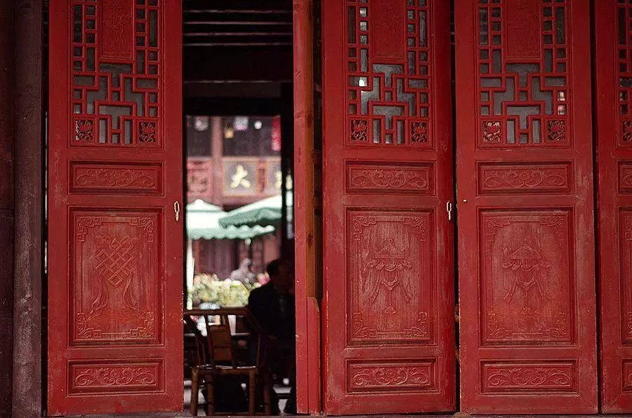
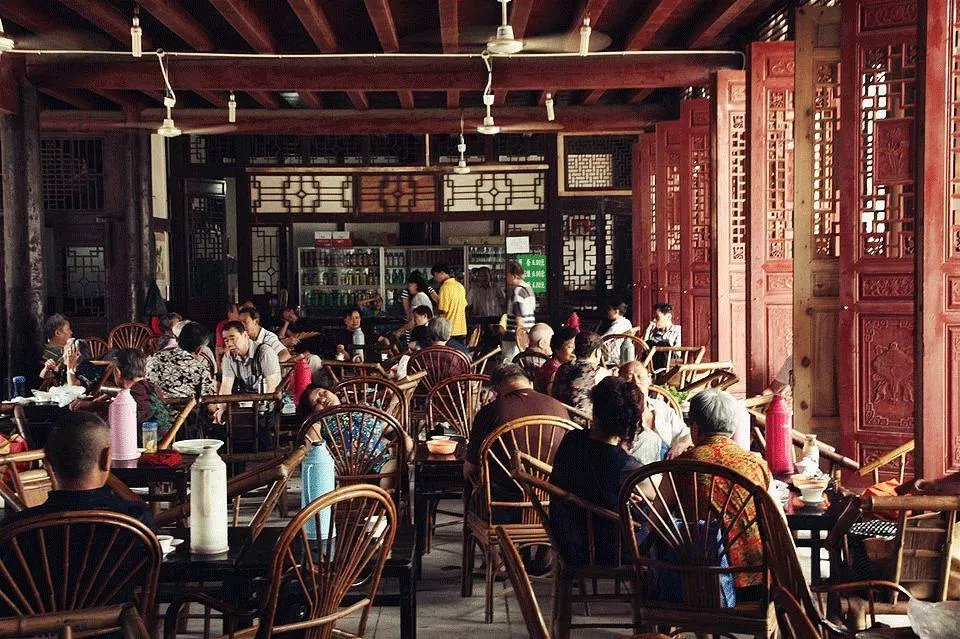
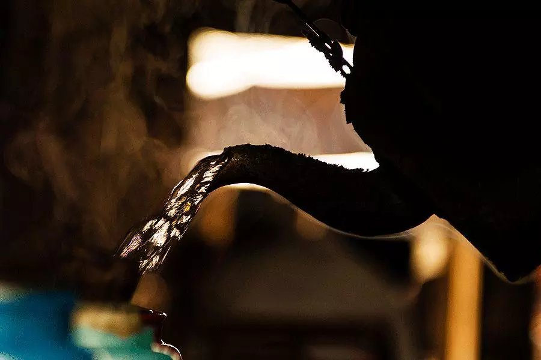
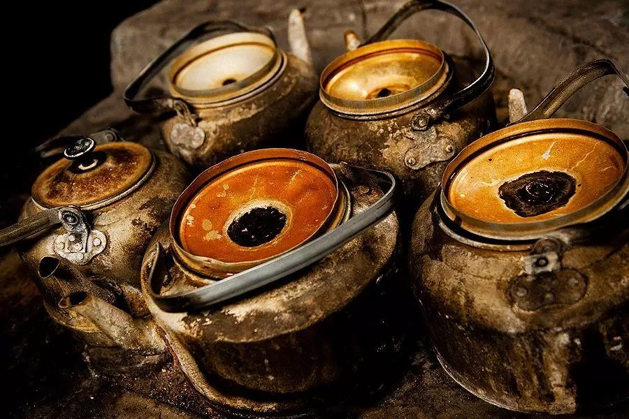
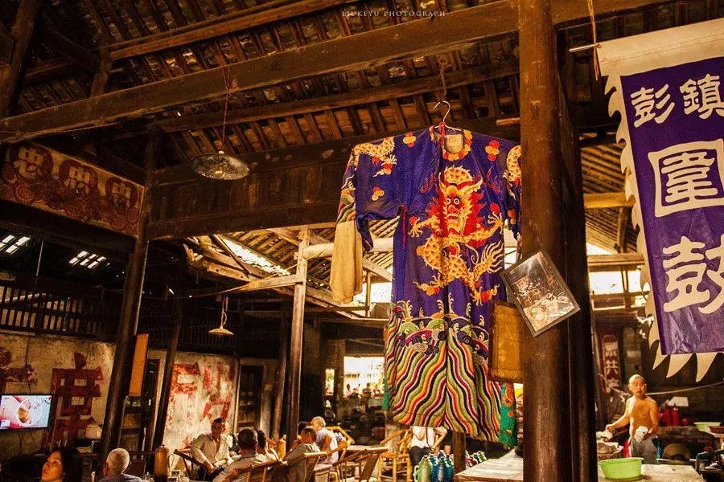
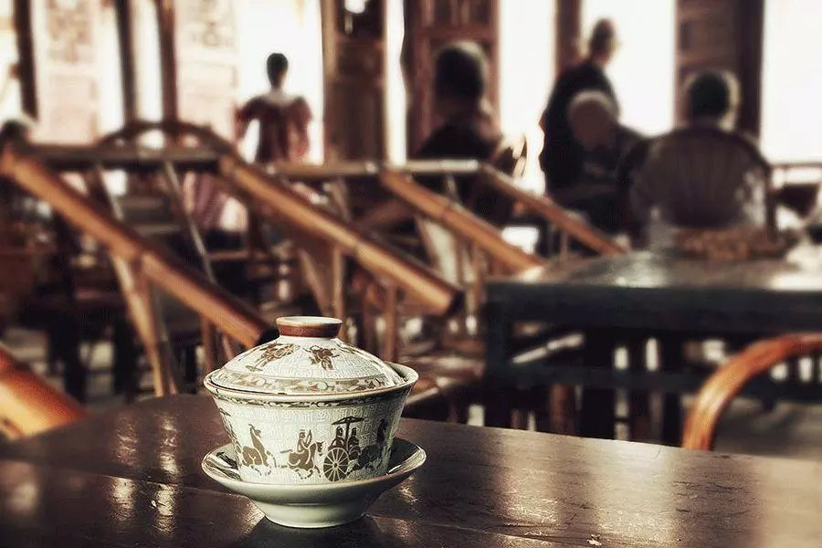

据《成都通览》记载，清朝末年成都街巷计516条，而茶馆则有454家。
几乎每条街都有茶馆。而且“无论哪一家，自日出至日落，都是高朋满座，而且常无隙地”（舒新城）。生意好得让人不敢相信。
 成都茶馆很有风格：不必高桌长凳，正襟危坐，而是摆上矮矮的竹靠椅，让人懒懒地挨进去。紫铜壶蹭光发亮，盖碗也自有特色，连堂倌跑堂添水的功夫，都教人看着就舒坦。


成都人泡茶馆，意不在喝茶，就是去享受的。茶铺里卖零嘴的，掏耳朵的，擦皮鞋的，各类人穿梭来去，热闹非凡。这时候喝口茶润润嗓子，就该摆起龙门阵（聊天）了。
摆龙门阵，是茶馆生活最要紧的事情。时事新闻，奇闻趣事，家长里短，都可以拿出来摆一下。摆着摆着，彼此的情况大家就都知晓了，以后谁有个什么需要帮忙的，喊一嗓子就有人来。人与人之间的联系在茶水之间流动起来。
许多城市都有喝茶的习惯，苏杭的茶清雅，潮汕的茶精致，老北京的茶妥帖，但好像没有哪里的茶喝得像成都这样“俗”，俗得渗透进每一个市井百姓的生活，俗得自在又舒适。
